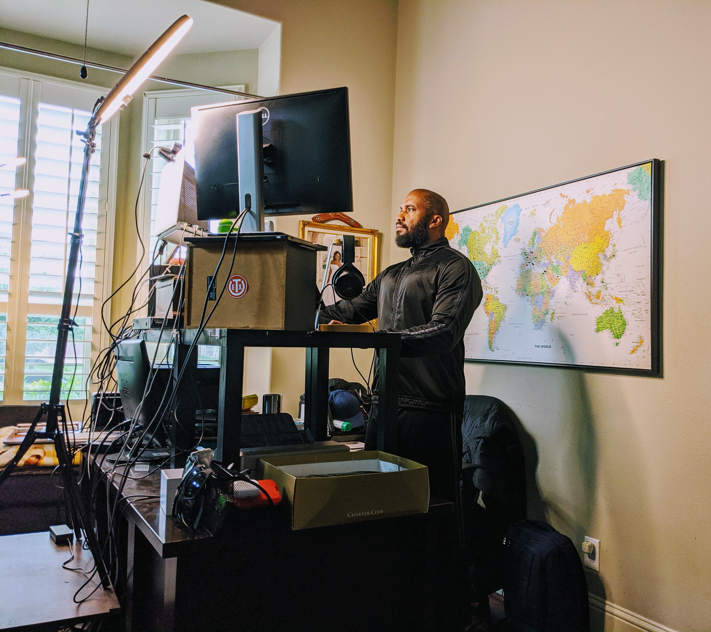

Finding High-Paying Remote Jobs in 2026: The Ultimate Guide
The year 2026 marks a pivotal moment in the history of labor. Remote work is no longer a "perk" or a temporary response to a crisis; it is the backbone of the global economy. Companies from Silicon Valley to Singapore are competing for talent across borders, and salaries for high-skilled remote roles have reached unprecedented levels. However, as the opportunities grow, so does the competition. To land a high-paying remote job today, you need more than just a good resume—you need a sophisticated strategy that combines technical mastery, personal branding, and advanced networking.

The New Landscape of Remote Compensation
In 2026, "high-paying" has a new definition. We are seeing remote roles in AI development, cybersecurity, and strategic management offering salaries ranging from $150,000 to over $400,000 annually, often accompanied by equity and comprehensive digital benefits. The key shift is that companies are now paying for output and impact rather than hours spent at a desk. This guide will explore how you can position yourself at the top 1% of the remote workforce.
1. Identifying the High-Value Niches of 2026
Not all remote jobs are created equal. To maximize your earning potential, you must align your skills with the industries that are currently experiencing the highest growth and investment. In 2026, these are the dominant sectors:
- AI & Autonomous Systems: Beyond simple coding, roles like AI Ethics Officers, Neural Network Architects, and Autonomous System Managers are in extreme demand.
- Cyber-Resilience: As digital threats become more sophisticated, companies are paying premiums for experts who can build proactive defense systems.
- Decentralized Finance (DeFi) & Web3 Infrastructure: The integration of blockchain into traditional finance has created a massive need for remote-first developers and legal experts.
- Sustainable Tech & Green Energy: Remote project managers and engineers in the renewable energy sector are seeing significant salary increases.
"The remote worker of 2026 is not just an employee; they are a specialized consultant delivering high-value solutions to a global market."
2. Building a "Remote-First" Professional Identity
Recruiters for high-paying roles look for specific indicators that a candidate will thrive in a remote environment. Your online presence must scream "reliability" and "autonomy."
The Digital Portfolio: In 2026, a static PDF resume is obsolete. You need a dynamic portfolio that showcases real-world impact. Use platforms like GitHub for code, Behance for design, or a personal Substack to demonstrate thought leadership. Show, don't just tell, how you solved complex problems remotely.
Proof of Asynchronous Mastery: High-paying remote companies value asynchronous communication. Highlight your experience with tools like Notion, Slack, and Loom. Show that you can move projects forward without needing constant real-time meetings.
3. Advanced Job Search Strategies
If you are only looking at LinkedIn, you are missing 80% of the high-paying market. In 2026, the best roles are found through specialized channels:
- Niche Job Boards: Platforms like RemoteOK, We Work Remotely, and FlexJobs remain relevant, but look for industry-specific boards like CryptoJobsList or ClimateBase.
- The "Hidden" Market: Many $200k+ roles are never publicly posted. They are filled through internal referrals and headhunters. Use LinkedIn to connect with "Talent Acquisition Partners" at your target companies before a job is even posted.
- AI-Driven Matching Platforms: New platforms in 2026 use AI to match your specific skill set with company needs. Ensure your profiles on platforms like Toptal or A-List are perfectly optimized.
4. Mastering the Remote Interview & Negotiation
The interview process for high-paying remote roles is rigorous. Expect multiple rounds, including technical assessments and "culture fit" video calls. During these calls, your background, lighting, and audio quality are part of the evaluation—they demonstrate your professionalism as a remote worker.
Negotiating Beyond Salary: In 2026, compensation is a package. Negotiate for:
- Home Office Stipends: High-end equipment and ergonomic furniture.
- Learning & Development Budgets: Continuous upskilling is vital.
- Equity & Performance Bonuses: Align your success with the company's growth.
- Flexible Hours: True autonomy over your schedule.
5. The Importance of Continuous Upskilling
The half-life of skills in 2026 is shorter than ever. To maintain a high salary, you must be a lifelong learner. Dedicate at least 5 hours a week to learning new technologies or methodologies. Whether it's mastering a new AI framework or understanding the latest in remote team psychology, staying ahead of the curve is your best insurance policy.
Conclusion: Your Path to Financial Freedom
Finding a high-paying remote job in 2026 is a marathon, not a sprint. It requires a commitment to excellence, a proactive approach to networking, and a deep understanding of the global market. By following the strategies outlined in this guide, you are not just looking for a job—you are building a career that offers both the financial rewards you deserve and the freedom you desire. Welcome to the future of work.